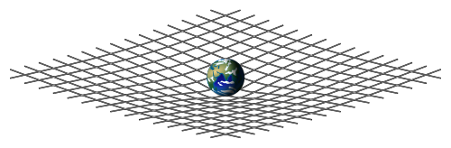
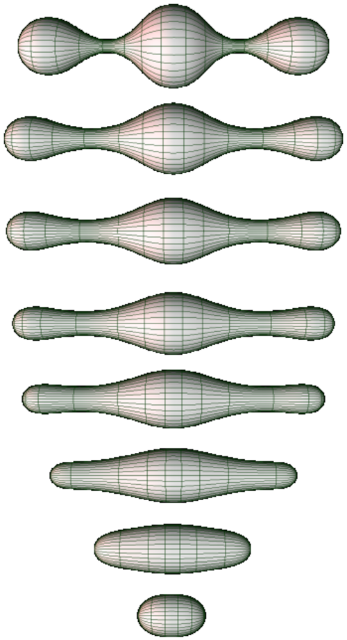

곡률을 요약하는 법
출발 문제
리만 곡률 텐서는
물리학에서 비슷한 상황을 생각해 보자. 100명으로 이루어진 집단의 시험 성적을 기술하려면 100개의 숫자가 필요하다. 하지만 실제로 우리가 자주 쓰는 것은 평균, 분산, 중앙값 같은 요약 통계량이다. 정보는 잃지만, 핵심은 남긴다. 곡률 텐서에서도 같은 전략이 가능할까?
더 구체적으로, 아인슈타인이 일반상대성이론의 장방정식을 세울 때 직면한 문제가 바로 이것이었다. 물질의 에너지-운동량 텐서
패턴
텐서의 성분들을 체계적으로 합산하는 **축약(contraction)**이라는 연산이 있다. 위 첨자와 아래 첨자를 하나씩 짝지어 합산하면, 텐서의 "등급"이 2만큼 줄어든다. 행렬의 대각합(trace)이 가장 친숙한 예시다:
리만 곡률 텐서
리치 텐서를 한 번 더 축약하면 —
이 축약의 계층 — 리만(4차) → 리치(2차) → 스칼라(0차) — 은 곡률 정보의 자연스러운 압축 경로다. 각 단계에서 정보를 잃지만, 남는 정보는 점점 더 본질적인 기하학적 의미를 갖는다.
정리
리치 곡률은 "부피가 어떻게 변하는가"를 측정한다. 한 점
여기서
리치 텐서는 이 부피 변화를 방향별로 분해한다.
아인슈타인 텐서

정의
-
리치 텐서 (부피 변화율 / Volume Growth Rate,
) — 곡률 텐서 를 첫째와 셋째 첨자에 대해 축약한 대칭 2차 텐서. 한 점에서 각 방향으로 측지선 다발의 부피가 얼마나 빠르게 변하는지를 알려준다. 리치 텐서가 0이면 — 리치 평탄(Ricci-flat) — 부피는 유클리드 공간에서처럼 변한다. 진공에서의 아인슈타인 방정식은 정확히 이다. -
스칼라 곡률 (전체 휘어짐의 한 숫자 요약 / One-Number Curvature Summary,
) — 리치 텐서를 계량으로 한 번 더 축약한 것. 한 점에서의 곡률을 하나의 숫자로 요약한다. "평균 곡률"이라고 생각할 수 있다. 2차원에서는 스칼라 곡률이 가우스 곡률의 2배와 같으므로, 스칼라 곡률 하나로 곡률의 모든 정보가 담긴다. 하지만 3차원 이상에서는 정보 손실이 불가피하다. -
아인슈타인 텐서 (중력이 보는 곡률 / The Part Gravity Cares About,
) — 리치 텐서에서 스칼라 곡률의 “추적(trace)” 부분을 빼서 발산이 정확히 0이 되도록 만든 텐서. 발산이 0이라는 성질 덕분에 에너지-운동량 보존을 자동으로 만족하는 장방정식을 쓸 수 있다. 일반상대성이론의 핵심 등식 의 좌변이 바로 이것이다. -
바일 텐서 (조석력 / Tidal Force Tensor,
) — 리만 곡률 텐서에서 리치 텐서로 결정되는 부분을 빼고 남은 나머지. “추적 없는(traceless)” 곡률이라고도 한다. 바일 텐서는 부피를 바꾸지 않고 모양만 변형하는 곡률, 즉 조석력(tidal force)에 대응한다. 지구 주변의 중력이 물체를 한 방향으로 늘이고 다른 방향으로 줄이는 것이 바일 곡률의 효과다. 3차원 이하에서는 바일 텐서가 항상 0이다 — 리치 텐서만으로 곡률 전체가 결정되기 때문이다.
핵심 인물과 일화
그레고리오 리치-쿠르바스트로 (Gregorio Ricci-Curbastro, 1853–1925)
리만 곡률 텐서가 존재한다는 것을 리만이 보였지만, 이것을 체계적으로 다루는 계산 언어를 만든 사람은 리치-쿠르바스트로다. 파도바 대학 교수였던 리치는 1880년대부터 "절대 미분학(calcolo differenziale assoluto)"을 개발한다 — 좌표에 의존하지 않는 텐서 연산의 체계.
리치의 핵심 아이디어 중 하나가 **축약(contraction)**이다. 4개의 첨자를 가진 리만 곡률 텐서
리치 자신은 이 텐서에 특별한 물리적 의미를 부여하지 않았다. 그것은 20년 뒤 아인슈타인의 일반상대성이론에서 이루어진다.
리처드 해밀턴 (Richard S. Hamilton, 1943–2024)
리치 텐서에 완전히 새로운 생명을 불어넣은 사람은 리처드 해밀턴이다. 1982년, 해밀턴은 획기적인 아이디어를 제시한다: 계량 텐서를 리치 곡률에 따라 흘려보내면 어떨까?
이것이 **리치 흐름(Ricci flow)**이다. 곡률이 양인 곳에서는 공간이 수축하고, 음인 곳에서는 팽창한다. 마치 고르지 않은 금속판에 열을 가하면 온도가 균일해지듯, 리치 흐름은 매니폴드의 기하학을 “균일하게” 만든다.

해밀턴은 이 흐름을 사용하여 양의 리치 곡률을 가진 3차원 매니폴드가 구와 같다는 것을 증명했다. 하지만 일반적인 3차원 매니폴드에 대해서는 특이점(singularity) 문제에 가로막혔다.
그리고리 페렐만 (Grigori Perelman, 1966–)
2002년 11월, 러시아 수학자 그리고리 페렐만은 arXiv에 짧은 프리프린트를 올린다. 제목: “리치 흐름의 엔트로피 공식과 그 기하학적 응용.” 후속 논문 두 편이 2003년에 이어진다.
페렐만은 해밀턴의 리치 흐름이 특이점에 도달할 때 어떤 일이 벌어지는지를 완전히 분석했다. 특이점이 생기면 매니폴드를 "수술(surgery)"로 절단하고, 각 조각에서 리치 흐름을 다시 시작한다. 이 과정을 반복하면 3차원 매니폴드가 표준적인 조각들로 분해된다는 것을 보인 것이다.
이 결과의 직접적 귀결이 푸앵카레 추측의 증명이다: 단일연결(simply connected)인 닫힌 3차원 매니폴드는 3차원 구와 같다. 1904년에 제기되어 100년간 미해결이었던 문제가 곡률 텐서의 축약이라는 리치의 대수적 조작과 해밀턴의 기하학적 흐름, 페렐만의 해석학적 통찰의 결합으로 풀린 것이다.
페렐만은 이 업적으로 필즈상(2006)과 밀레니엄 상금(2010, 100만 달러)을 수상했으나 모두 거절했다. "증명이 올바르다면 다른 인정은 필요 없다"는 이유였다.
시각화 아이디어
- 측지 공의 부피: 양의 곡률 → 부피가 더 작다, 음의 곡률 → 부피가 더 크다
- 리치 흐름 시뮬레이션: 울퉁불퉁한 곡면이 리치 흐름에 의해 점차 균일해지는 애니메이션
- 곡률 텐서 → 리치 → 스칼라 축약 다이어그램: 20개 → 10개 → 1개로 정보 압축
연결되는 세계들
| 분야 | 연결 |
|---|---|
| 일반상대론 | 아인슈타인 방정식, 블랙홀의 특이점, 우주론 |
| 위상수학 | 리치 흐름과 푸앵카레 추측 (페렐만, 2003) |
| 기계학습 | 손실 풍경의 리치 곡률 → 학습이 어려운 영역 |
| 최적수송 | 리치 곡률의 하한과 최적수송의 수축 성질 |
| 정보기하학 | 통계적 매니폴드의 스칼라 곡률 → 추정의 효율성 |